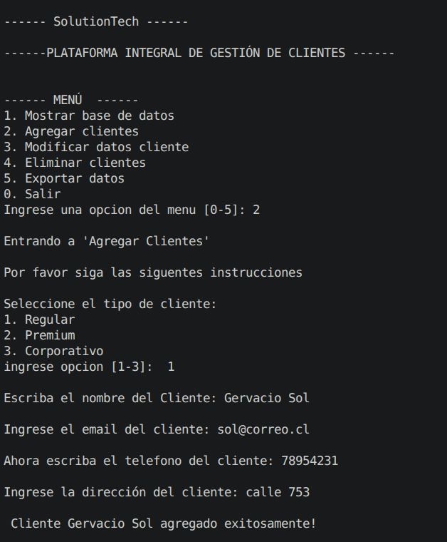

Plataforma Integral de Gestión de Clientes
Resumen
Programa simple en POO con Python, sirve como repositorio de base de datos de clientes, junto con un programa a nivel de terminal para modificación, almacenamiento y eliminación de datos, junto con un registro de actividad realizada por el consultante. (Se agregó el diagrama de clase con el nombre "UML proyecto 4").
- Programación Orientada a Objetos (POO)
- Almacenamiento en archivos de texto plano
- Exportación a formatos
.txty.csv - Registro de actividades del usuario
- Interfaz por terminal
Acciones disponibles
- Visualizar todos los clientes almacenados
- Agregar nuevos clientes
- Modificar datos de clientes existentes
- Eliminar clientes
- Exportar datos a CSV
